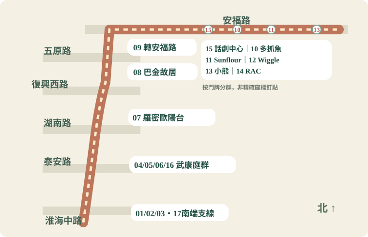

← 全部12日
2026 / 11 / 20
11/20（五）｜銀行辦事・上海七條路線
11/20（五）｜銀行辦事・上海七條路線
選擇路線 ▾
上午先辦理銀行業務；下午依結束時間選一條主線。武康庭與安福路已包含在選項01，不重複列項。

01 武康／安福｜本圖為分段示意；點選選項01查看核准原版17站完整手繪圖
01 武康／安福
查看路線 ›
📍 武康大樓 → 武康庭 → 安福路
02 思南公館
查看路線 ›
📍 思南路 → 思南公館 → 周邊花園洋房
03 新天地北里
查看路線 ›
📍 新天地北里 → 石庫門街巷
04 上生新所
查看路線 ›
📍 孫科別墅 → 哥倫比亞圈泳池 → 園區
05 愚園路
查看路線 ›
📍 愚園路歷史街區 → 文創店舖
06 上海植物園
查看路線 ›
📍 植物園入口 → 園區步道 → 溫室
07 豫園／九曲橋
查看路線 ›
📍 豫園 → 九曲橋 → 城隍廟商圈
← 前一日
下一日 →